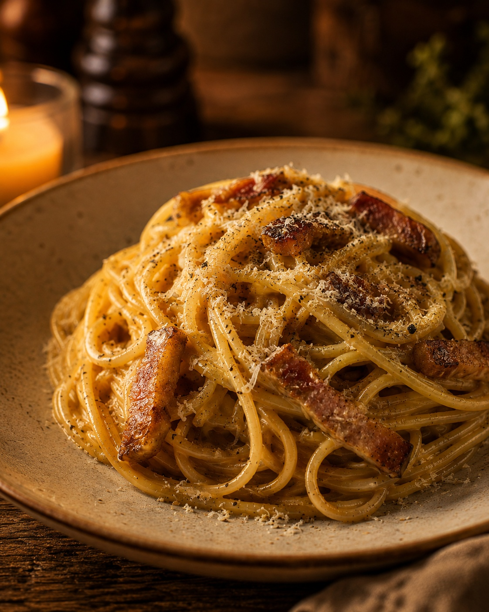
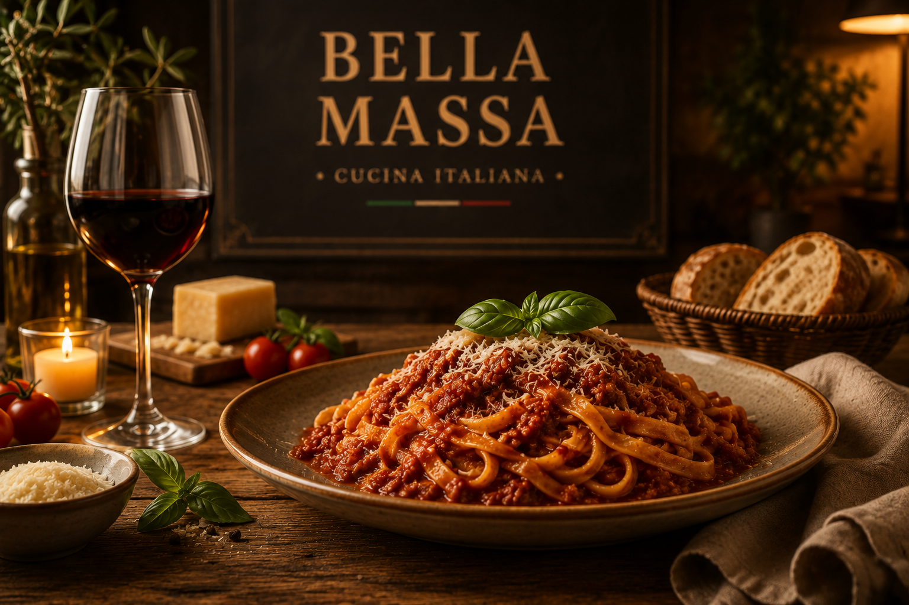
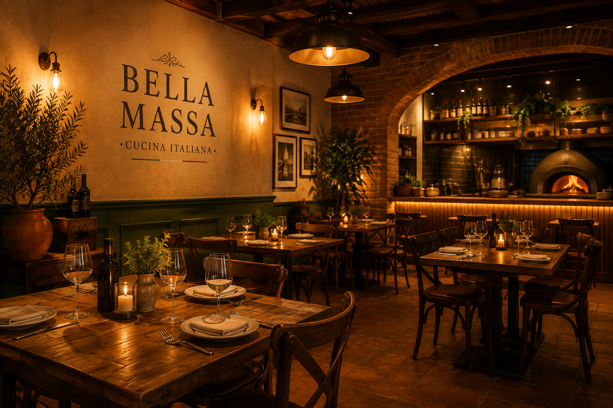
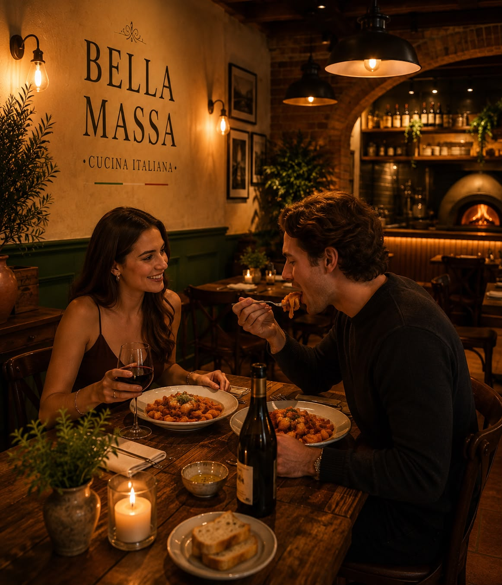

Spaghetti Carbonara
R$ 49Spaghetti artesanal, guanciale, ovos, pecorino romano e pimenta-do-reino.
Massas artesanais, ingredientes selecionados e receitas tradicionais preparadas para transformar cada refeição em uma experiência especial.

No Bella Massa, acreditamos que a melhor comida nasce da combinação entre ingredientes de qualidade, receitas tradicionais e o prazer de compartilhar bons momentos.

Nossa cozinha valoriza o preparo artesanal e os sabores clássicos da culinária italiana. Cada massa é preparada com cuidado, utilizando ingredientes selecionados e técnicas que respeitam a tradição.
Mais do que servir pratos, queremos criar momentos. Um jantar especial, um encontro entre amigos ou simplesmente aquela vontade de comer uma boa massa.
Conheça nossa história →Ambiente acolhedor, iluminação agradável e uma cozinha aberta para você acompanhar de perto o cuidado com cada prato.
Seja para um jantar romântico, uma comemoração ou uma noite especial com amigos, o Bella Massa foi pensado para transformar a refeição em uma experiência.
Reserve sua mesa →
“A massa estava simplesmente incrível. O ambiente é aconchegante e o atendimento fez toda a diferença.”
“Um dos melhores restaurantes italianos que já conheci. A comida tem realmente aquele sabor de comida feita em casa.”
“Escolhemos o Bella Massa para comemorar nosso aniversário de casamento e foi uma experiência maravilhosa.”
Faça sua reserva e venha conhecer o sabor da verdadeira cozinha italiana no Bella Massa.